六年前，因為鼠媽媽那年的生日願望，2018/4/22家裡多了一隻小橘貓，她叫右右。是鼠媽媽的生日禮物，也是我們家的第一個孩子。那時候的右右真的好小好小，甚至可以放進口袋，就連一個馬克杯對她都是龐然大物。每天陪她玩逗貓棒，晚上跟鼠媽媽搶著讓她窩在肚子上咕嚕咕嚕地睡覺。那時候，我們有很多時間陪她。
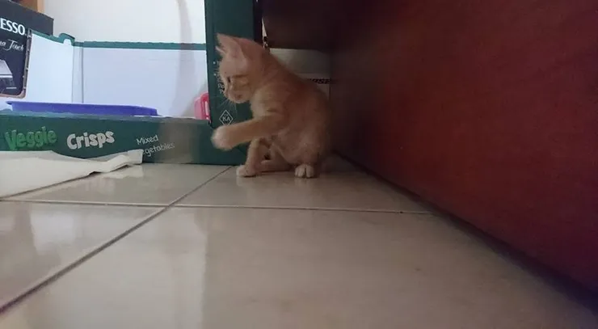
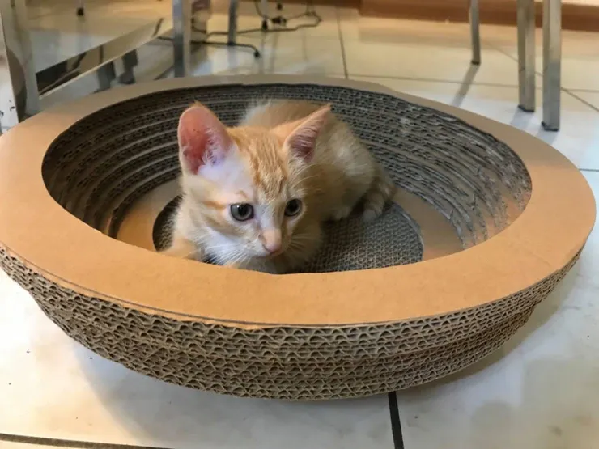
後來，家裡多了鼠姊姊，鼠姊姊又想吵著要雅虎弟弟，最近，又多了龍弟弟。迎接新生兒和幼兒園的生活，除了接送、上班、煮飯、洗澡、陪睡，隨時都再更新的生活模式，心很累，時間也被切得很碎。
回過神來才發現，雞爸爸好像已經很久沒有專心陪右右了。
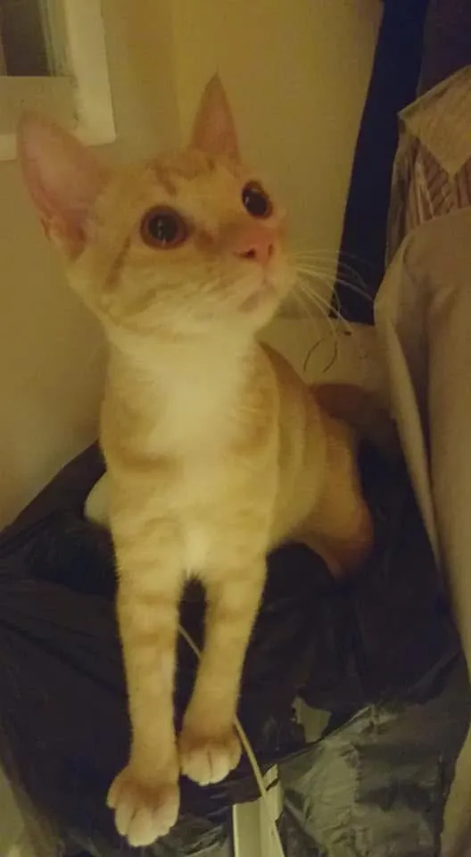
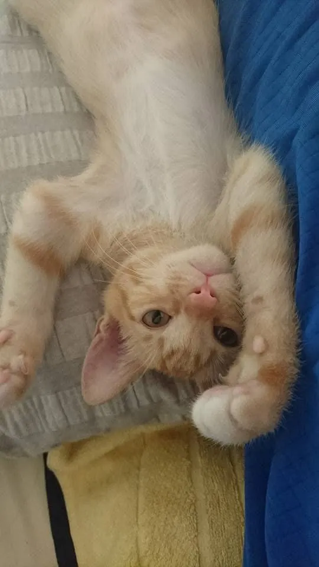
就是想帶一個貓抓碗給右右
今天，我帶回一個新的貓抓碗。不是因為今天是她生日，她真正的生日，其實早在四月。就是突然覺得，右右甚至已經很久沒有收到一份只屬於她的禮物，因為家裡還多了雅虎。
右右開心地窩了進去，慢慢把自己縮成一顆胖橘子，那一刻，我突然有點愧疚。
原來，一個新的貓抓碗，就能讓她這麼滿足，她卻好久沒有一個她最愛的貓抓碗。
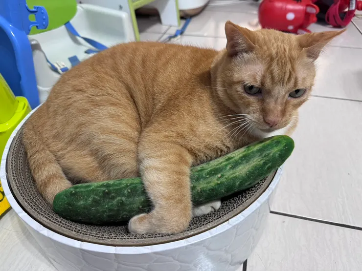
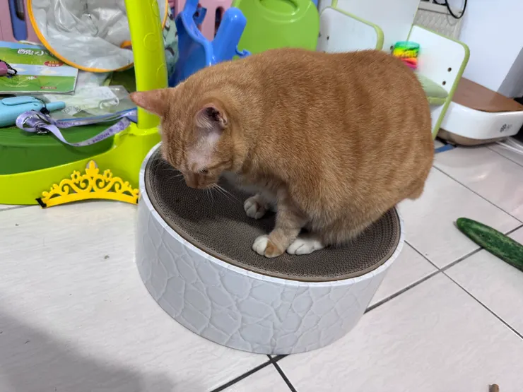
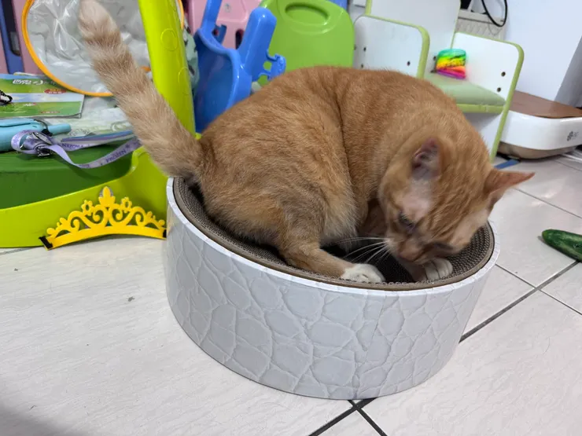
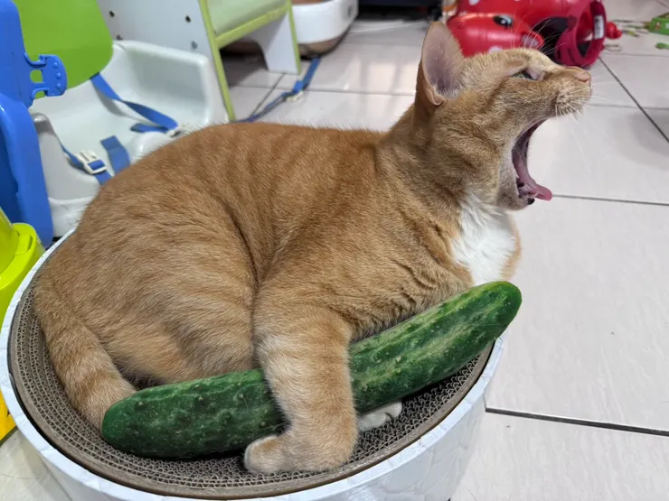
然而就在這時，鼠姊姊跑去把雅虎的貓抓台搬到了客廳。
鼠姊姊覺得：「右右有新的，雅虎也要有。」孩子的世界，很公平。
但我心裡卻沉了一下，因為我知道雅虎的個性。
果然，搬動的聲音，把雅虎吵醒了。
雅虎跑到客廳沒有走向自己的貓抓台，而是直接走向右右的新貓抓碗。
右右默默站了起來，把位置讓了出去。
我站在旁邊，心裡突然有點不是滋味。
右右姐姐的懂事 讓我更加不捨
我不是怪鼠姊姊，她只是想讓兩隻貓都有。但她不知道，有些人天生會退讓；有些人天生會往前衝。她還只是個孩子。
真正難受的是，明明知道會發生，卻還是眼睜睜看著右右，把自己的位置讓了出去。
就像這幾年一樣，她一直都很乖。
乖到我們都以為，她不需要陪伴。
後來，我把雅虎抱回自己的貓抓台，把右右重新放回她的新貓抓碗。
我摸了摸她的頭，想起她不是最近才來到我們家。
當初鼠媽媽還開心地為右右畫了畫，也是右右最愛的貓抓碗。
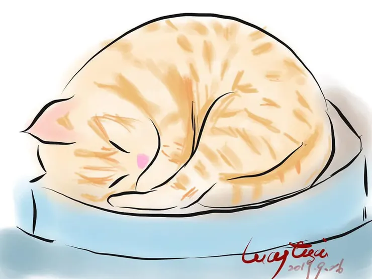
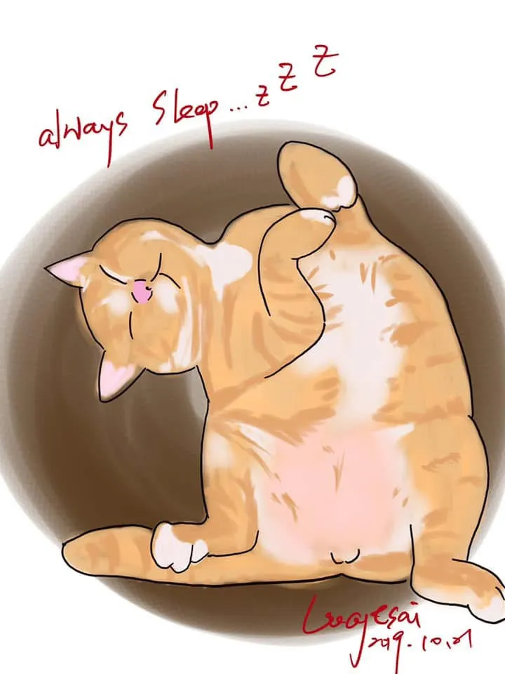
她已經陪伴我們六年了，陪我們從兩個人，變成四口之家。
陪鼠姊姊長大，也陪龍弟弟學會叫第一聲「貓」。
而我們，卻因為忙著照顧孩子，慢慢把陪伴她這件事，放到了後面。
欠了右右姐姐很久的話
今天這個貓抓碗，不是生日禮物，更像是一句遲到很久的話。
右右，謝謝妳一直陪著我們。
對不起，這幾年忙著陪孩子長大，卻忘了妳也一直在等我們陪妳。
我們一直感謝妳的默默陪伴，
妳一直都是我們家的大姊姊。 🧡

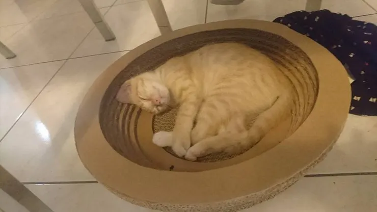
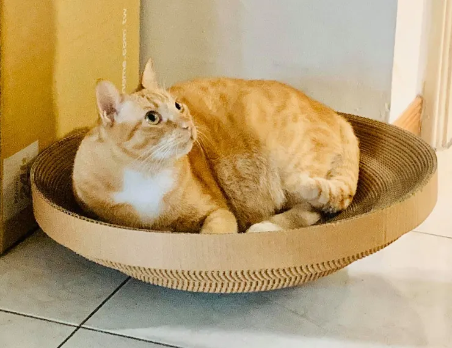
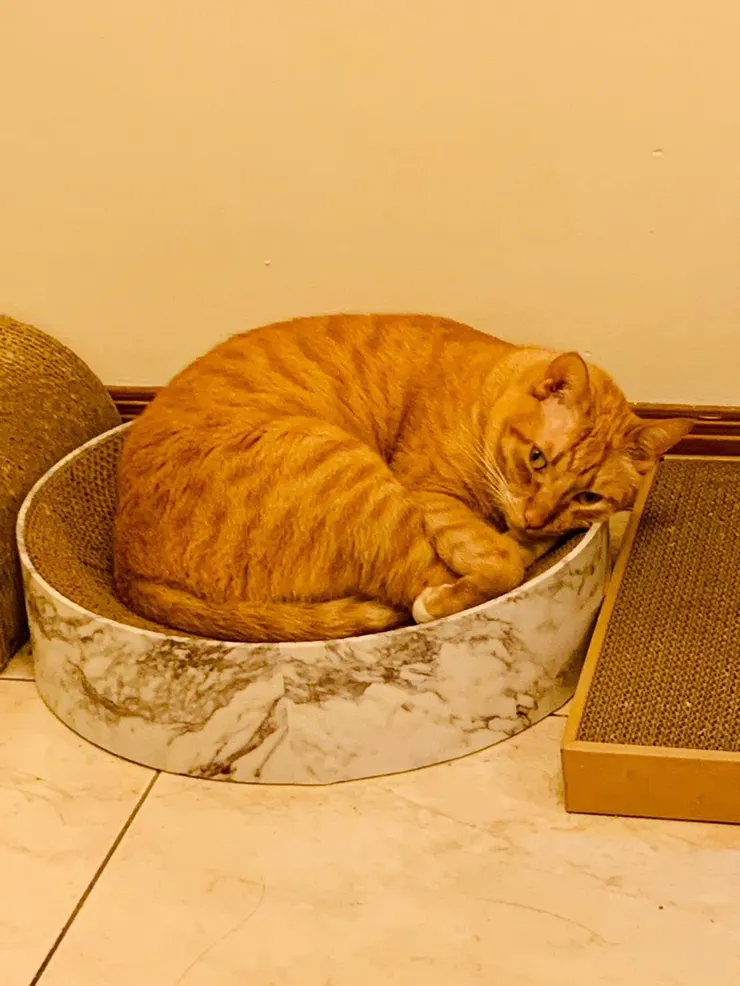
2018、2019、2020、2026右右貓抓碗